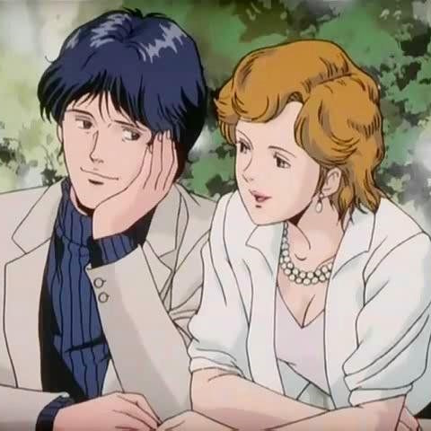

Yang Wen-Li, the historian-turned-admiral, is man of many talents - but also many shortcomings. I would argue he is the show’s only true genius, given his savant-like aptitude for commanding fleets and consistently brilliant sense of strategy. Furthermore, he is clearly the superior philosopher to his Imperial counterpart – his steadfast devotion to democracy being borne from his vast historical knowledge, in contrast to Reinhard’s ideals being born largely from his personal feelings.
That said, the depth of his intellect and wisdom does not necessarily equate with being the ideal hero. His unflappable ideological conviction, combined with his unique “humble soldier” mentality, though admirable, often results in unfavorable outcomes for his side. Take, for example, his widely controversial decision to abide by Heinessen’s ceasefire order when he had Reinhard’s flagship in his sights. Not only did this enrage his fleet, who felt forsaken given all they had sacrificed to defeat Reinhard – but it also spelled defeat for the Free Planets Alliance.
Whether his decision was irresponsible or commendable is for you to decide, but I think it’s worth noting that it epitomizes Yang’s personality – remaining absolutely unwavering in his ideology, even when it ends up hurting him. It’s things like this that make him a uniquely complex character, and bring him to the next level among anime protagonists. Regardless of whether or not you personally agree with his zealous conviction, LoGH wouldn’t be the masterful show it is without these sorts of characters.
His being a simple man without grand ambitions sets him starkly apart from Reinhard. Even his loyal lieutenants such as Schonkopp egg him on to leverage his power to make himself dictator – and while it certainly could’ve been done, he was more interested in ending the war as soon as possible so he could retire to the countryside with a nice fat pension. Eschewing typical power fantasy wish-fulfillment, he finds a place in our hearts as a relatable, decent human being who reluctantly took up the mantle of democracy’s foremost defender when no one else would.
